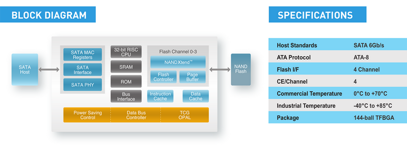

Чип SMI SM2258XT базируется на одноядерном 32-битном RISC-процессоре, при работе с массивом флеш-памяти использует четыре канала и псевдо-SLC-кеширование, а также поддерживают «сильную» технологию коррекции ошибок LDPC ECC, которая в несколько раз продлевает жизнь памяти с трёхбитовыми ячейками.
Этот контроллер можно считать аналогом используемого в Plextor S2C чипа SMI SM2258, но с одним важным изменением. В SM2258XT вырезан DRAM-интерефейс, что делает WD Green SSD похожим на SmartBuy Revival 2 – это тоже удешевлённый по максимуму накопитель, который работает с массивом флеш-памяти без дополнительного уровня буферизации и без кеширования в быстрой памяти таблицы трансляции адресов. В остальном же всё осталось без изменений. Чип SMI SM2258XT базируется на одноядерном 32-битном RISC-процессоре, при работе с массивом флеш-памяти использует четыре канала и псевдо-SLC-кеширование, а также поддерживают «сильную» технологию коррекции ошибок LDPC ECC, которая в несколько раз продлевает жизнь памяти с трёхбитовыми ячейками.

Есть в SM2258XT и режим прямой записи в TLC-память без посредничества со стороны SLC-кеша (Direct-to-TLC). Это значит, что при одномоментном сохранении больших объёмов данных SM2258XT достаточно эффективен: когда SLC-кеш переполняется, ему не нужно делать пауз для его освобождения, вследствие этого операции записи могут выполняться с более высокой скоростью, не падающей ниже 140 Мбайт/с, и без неприятных секундных «залипаний».